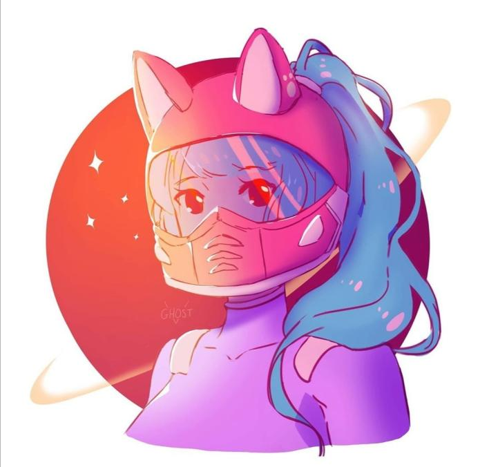

Ce site a été créer dans le cadre d'un mini-projet de l'option ISN, codé en HTML&CSS !

Yaël
Lycéen de 17 ans, en classe de Terminale S SI, co-fondateur d'Anabi, passioné de langages de programmations.
J'ai acquis les bases en HTML/CSS, PHP/SQL ce qui me permet d'avoir les compétences requises afin de créer un réseau social ! Et Je suis un très grand amateur de
séries/films/animés.

Simon
Lycéen de 17 ans aimant l'algorithmique, passionné par le Japon et tout ce qui y touche, je suis également un joueur (trop) actif aux jeux-vidéos